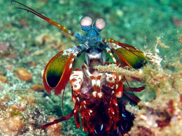

Sobre o animal.
Stomatopoda (ou estomatópode), chamados popularmente de tamarutacas ou de lacraias-do-mar no Brasil, conhecido na comunidade científica como Odontodactylus scyllarus, é uma ordem de crustáceos marinhos da subclasse Hoplocarida, que agrupa cerca de 400 espécies, caracterizadas principalmente pela morfologia da segunda pata torácica, que é modificada em apêndice subquelado, lembrando uma pata de louva-a-deus. Os estomatópodes são predadores ativos que caçam presas com o auxílio de um sentido de visão muito apurado e capaz de interpretar polarização no espectro ultravioleta e infravermelho).
Apresentam uma grande variação de tamanho, que pode ir de poucos milímetros até aproximadamente 40 cm nas espécies maiores.
Eles vivem em fundo consolidado, lodoso ou ainda arenoso, onde cavam seus buracos ou aproveitam-se dos orifícios deixados por outros animais para neles se instalar. São animais exclusivamente carnívoros, alimentando-se de camarões, caranguejos, moluscos, peixes e até mesmo outros da mesma ordem. O segundo par de patas, muito desenvolvido, é usado tanto para atacar a presa como para se defender. O urópodo, quando aberto, também funciona para defesa, como um escudo, fechando a galeria em que o animal esteja instalado. A fêmea desova no local onde se abriga e, em caso de perigo, enrola os ovos como uma bola, prendendo-os junto ao corpo até encontrar um abrigo mais protegido.
Também conhecidas como esquilas ou lagosta-boxeadora, espalhadas pelas costas dos mares tropicais e subtropicais. Além das patas, elas apresentam uma silhueta característica, devido ao grande comprimento aparentemente de seu abdómen. Os ovos ficam ligados por uma massa gelatinosa que a mãe carrega contra o ventre até que eclodem, limpando-os sem parar.
São animais que apresentam comportamentos sociais muito variados, desde ameaças visuais contra predadores até comportamentos de côrte. De acordo com a anatomia da sua pata raptorial é possível distinguir entre dois grupos funcionais, as perfuradoras (spearers) ou as esmagadoras (smashers), sendo que cada um dos tipos apresenta sua própria variação comportamental e até mesmo de habitat.
Patas
As maiores esmagadoras, tais como exemplares de Odontodactylus scyllarus, são capazes de desferir um dos mais rápidos e violentos golpes do reino animal, um soco que pode apresentar a velocidade de um tiro calibre .22 (equivalente a 720km/h) e uma força de impacto de 60 kg/cm². Essa força esmagadora é a responsável pelo seu título de "lagosta-boxeadora" e é capaz de facilmente quebrar a carapaça de um caranguejo, as conchas duras e calcificadas de gastrópodes ou até mesmo quebrar o vidro reforçado de um aquário.
Visão
Os olhos são testemunhas da criatividade da evolução. Todos eles fazem as mesmas coisas básicas - detectam luz e a convertem em sinais elétricos - mas de uma variedade incrível de maneiras. Existem olhos simples e compostos, lentes bifocais e rochosas, espelhos e fibras ópticas. E há olhos que são tão estranhos, tão constantemente surpreendentes que, após décadas de pesquisa, os cientistas apenas agora descobriram como funcionam, porém, não por que evoluíram dessa forma. Para encontrá-los, você precisa dar um mergulho. Esses animais possuem o mais complexo sistema de visão de cores do mundo animal, pois enxergam 12 cores primárias, correspondentes aos 12 pigmentos distintos presentes em sua retina. Apenas comparando, nossos olhos possuem três tipos desses receptores - que correspondem à luz azul, verde e vermelha -, que nos permitem perceber o espectro de cores que vemos.